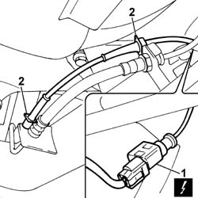
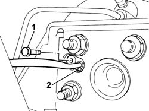

3340A34 rpm sensor (one) of one l/h or r/h rear wheel - r+r
- Path
- Procedures > 33 BRAKING SYSTEM > 3340 ANTI-LOCK BRAKE SYSTEM (ABS) > 3340A abs check/adjustment devices > 3340A34 rpm sensor (one) of one l/h or r/h rear wheel - r+r
- Kind
- repair procedure (removal / refitting; the operation number is the code)
- Applies to
- all engines; all production periods
- Interactive page
- https://sloeber94.github.io/elrnDB-fPnd/en/#/2752758
Applies to: all engines; all production periods
 Removing
Removing
 Refitting
RefittingDisconnect the battery negative terminal.
Place the car on a ramp.
Or
1. Disconnect the electrical connection for the ABS wheel sensor.
 | Name | Connector |
|---|---|---|
1 | Right rear wheel sensor for ABS | K76 |
| Name | Connector |
|---|---|---|
1 | Left rear wheel sensor for ABS | K75 |
2. Release the rpm sensor electrical cable from the brackets on the rear axle.

Applies to: all engines; all production periods
1. Undo the bolt securing the rear wheel rpm sensor.
2. Remove the rear rpm sensor.

Applies to: all engines; all production periods
Refitting
RemovingFit the wheel rpm sensor, positioning the wiring correctly.
Connect the electrical connector.
| Name | Connector |
|---|---|---|
- | Right rear wheel sensor for ABS | K76 |
| Name | Connector |
|---|---|---|
- | Left rear wheel sensor for ABS | K75 |
Screw in the rpm sensor bolt.
 | Fastening | Component | Ø | Value (daNm) |
|---|---|---|---|---|
- | Bolt | ABS REAR WHEEL RPM SENSOR | M6 | 0.7 |
Or.
Connect the battery negative terminal.
Remove the vehicle from the ramp.